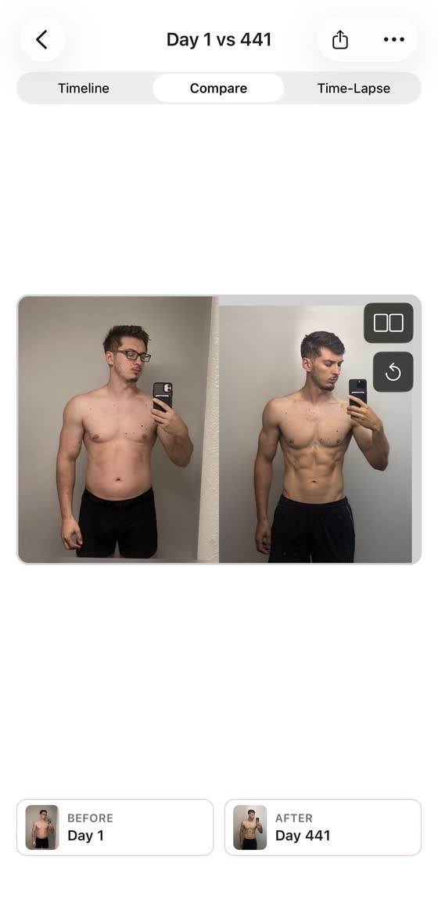
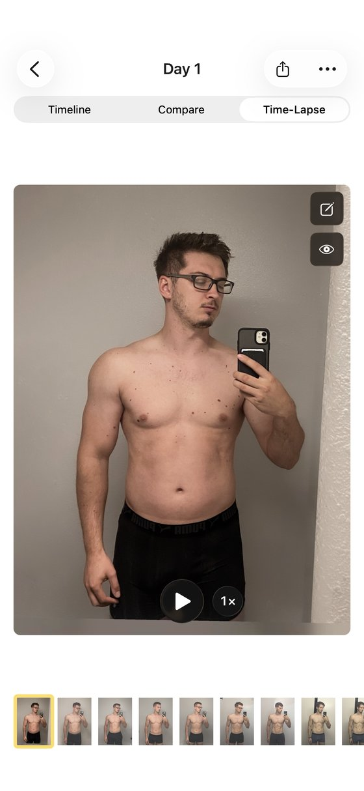
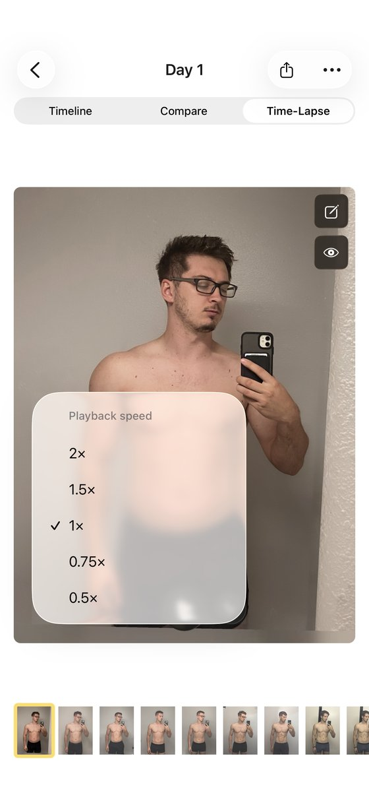
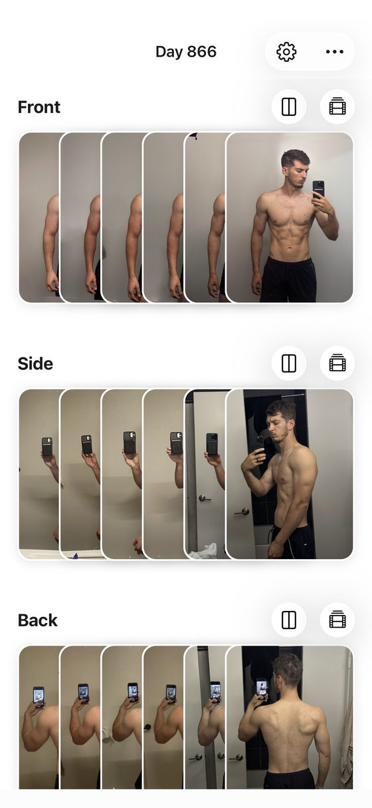
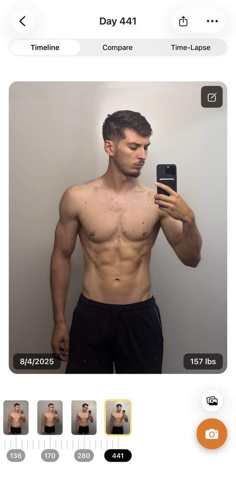

Blog · Best progress photo apps · [DRAFT: noindex, not published; publish date TBD] · Mark Stepchin
Progress Pics: Body Tracker review: the auto-align that works as a first pass
By Mark Stepchin · Updated [CONFIRM: publish date]
Full disclosure: I build Recomp, a free progress photo app that competes with this one. No app pays me [CONFIRM: no ads, affiliate links or partner deals]. Recomp doesn't auto-align photos today, so this is the app I point people to when they want it. This review expands the Thumbstone entry in my roundup of the best progress photo apps, scored with the same kit.
[CONFIRM: Mark's Oct 4 notes call "the app with built-in alignment" the one he liked most; Alfred thinks that's Thumbstone. Confirm before using "favorite" anywhere.]
What it costs
Progress Pics is a free trial, then a subscription or a lifetime purchase. The App Store lists Pro Monthly at $4.99, Pro Yearly at $29.99, $14.99 and $9.99, and Pro Lifetime at $39.99. The developer's pricing page lists only $4.99 a month and $29.99 a year, with a 14-day free trial on the yearly plan and "every feature included, no separate tiers." [CONFIRM: the $9.99 and $14.99 yearly entries are likely offers]
Taking a check-in
I scored capture 4 out of 5: a timer, plus date and weight at capture. There's no ghost overlay of your last photo. The UI isn't the most intuitive, so my first check-in was also a lesson in where its buttons live. Weight tracking arrived in 1.8.0 on Jul 3, 2026, and a redesigned camera in 1.9.2 on Sep 14. [TODO: seconds and taps to a saved check-in]
How well auto-align works
Auto-align runs after capture and snaps shoulders and hips to guides. Roughly three in four of my shirtless photos landed right, so I proposed 3 out of 5 for alignment. [CONFIRM: Mark's "75%" result and the "about three in four" wording] Version 1.8.2 on Jul 15, 2026 promised "Smarter AI alignment: pose detection is now more accurate."
Fixing the misses by hand is the weak spot. Manual alignment is sluggish, like it has the brakes on. That matters, because one photo in four still needs a correction. I explain why pose-based alignment misses in how well progress photo auto-alignment works [CONFIRM: PR #26 article live before linking]. [TODO: auto-align hit rate on clothed photos]
Comparing two dates
I scored comparison 4 out of 5, the highest of any app I graded. It offers side by side, a slider, an overlay with an opacity slider, and a time-lapse with playback controls, and each one can be shared. The UX isn't as smooth as the feature list. Since 1.8.4 on Aug 21, 2026, it shares to Instagram, WhatsApp and Messages and can blur faces on exports.
[TODO: the roundup says "Thumbstone has every mode [CONFIRM: stacked]". Its own modes are side by side, slider, overlay and time-lapse, with no stacked view confirmed. Confirm before repeating "every mode".]




How it organizes check-ins
Front, side and back live in three separate stacks. Each stack has its own timeline that scrubs by day, with the date and weight on each photo. Its site says imports from the camera roll get organized "into your timeline by date," but not whether the date comes from each photo's metadata. [TODO: whether same-day photos stay linked across the three stacks]


Where your photos live
Photos stay on your device, and there's no account. The listing says "We do not upload, store, or share your images," and the label reads Data Not Linked to You. Its privacy policy names Google Analytics for Firebase, Firebase Crashlytics, Expo, Sentry, Mixpanel and RevenueCat. The policy also mentions approximate location, which the label doesn't list.
There's no in-app backup, so deleting the app deletes your photos. The developer's own FAQ tells you to export your photos and videos before switching phones or removing the app. [TODO: delete-and-restore test: does an iPhone backup bring its photos back?]
Scores so far
| Score (1 to 5) | Thumbstone | Status |
|---|---|---|
| Capture and tracking | 4 | Scored |
| Alignment | 3 | Proposed |
| Comparison | 4 | Scored |
| Design | TBD | |
| Performance | TBD | Full-library test pending |
| Privacy | TBD | |
| Backup | TBD | |
| Import (bonus, outside the total) | TBD | |
| Total out of 35 | TBD | 11 from the three scored |
[CONFIRM: rescore on the v8 rubric or the Oct 4 measured tiers; v7 provisional grade was A, 20/25. Beginner all-in-one label.]
The numbers
Every app's numbers sit side by side, with test dates, in my test data.
| Field | Value |
|---|---|
| Full name | Progress Pics: Body Tracker (Thumbstone Labs Ltd) |
| Rating | 4.65 from 43 US ratings (Oct 3, 2026) |
| Written reviews, Jul 2 to Oct 2, 2026 | 0 (US feed) |
| First released | Mar 8, 2026 [CONFIRM: same date as GainFrame] |
| Last updated | Sep 24, 2026 |
| Version tested | 1.9.4 [CONFIRM] |
| Requires | iOS 16.4+ on iPhone, plus Apple Silicon Mac and Vision Pro; no iPad |
| Android | Yes, on Google Play (updated Sep 25, 2026) |
| App Store search | No. 1 for "progress photos" |
| Names | The listing has been renamed twice since September; its site says "Body Tracker" and its policy "Body Transformation app" |
| App Store | Progress Pics: Body Tracker on the App Store |
Who should use something else
If you want a one-time price and iCloud sync, use Fit-Stitch. If you want date-reading import and a voice timer, see Then & Now. Thumbstone's short track record is its other risk: 43 ratings since March 2026.
What I haven't tested yet
I still need its design and performance scores, a clothed-photo auto-align run, and a restore test. The full-library test decides whether its stacks stay fast with hundreds of photos. If you've used Thumbstone's auto-align on clothed photos, email me at support@progressphotos.app.
See the progress buried in your camera roll
Compare progress photos on a before-and-after timeline, scroll to any date instantly, and align photos on the fly. Recomp never uploads your photos. It sends anonymous usage analytics and crash reports, with no account and no tracking.